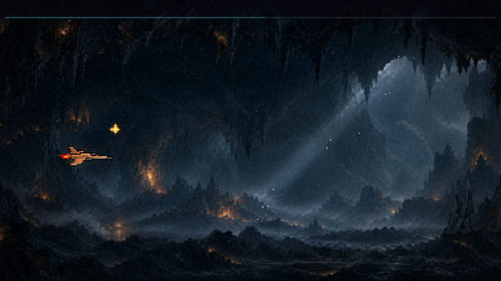
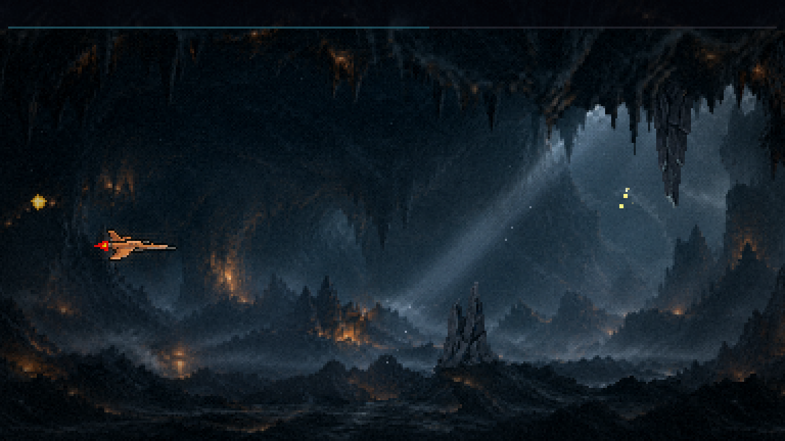
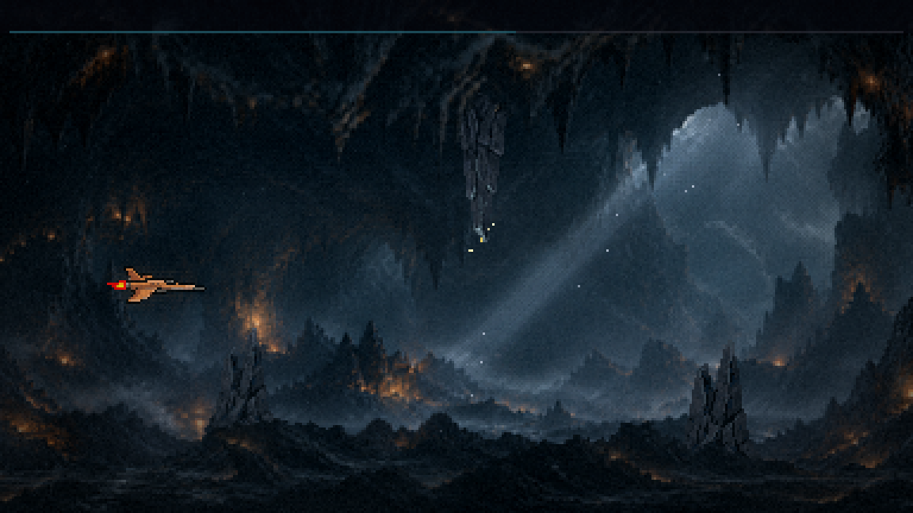
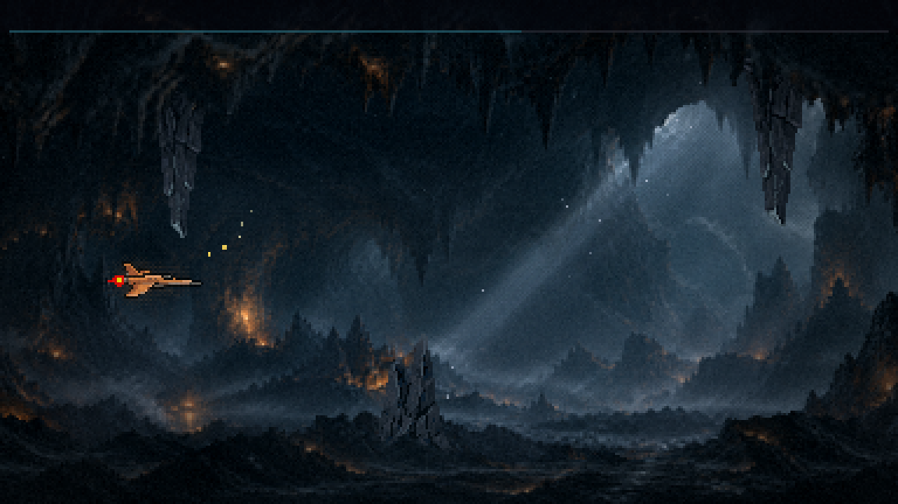
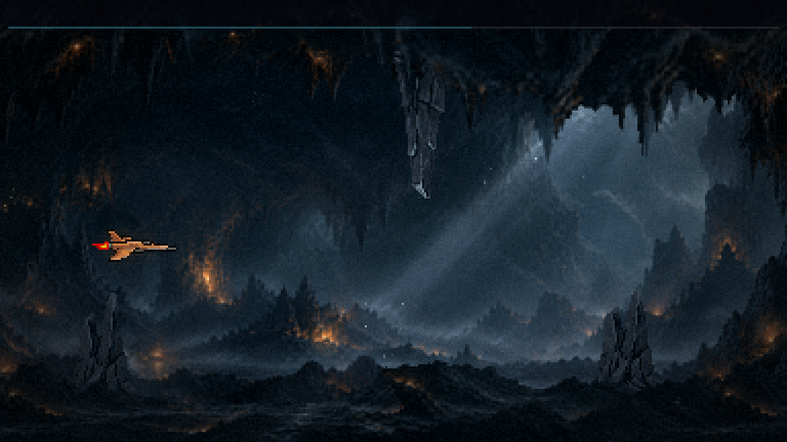
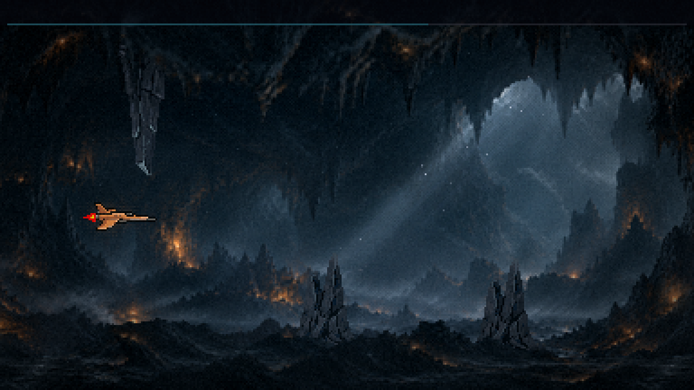
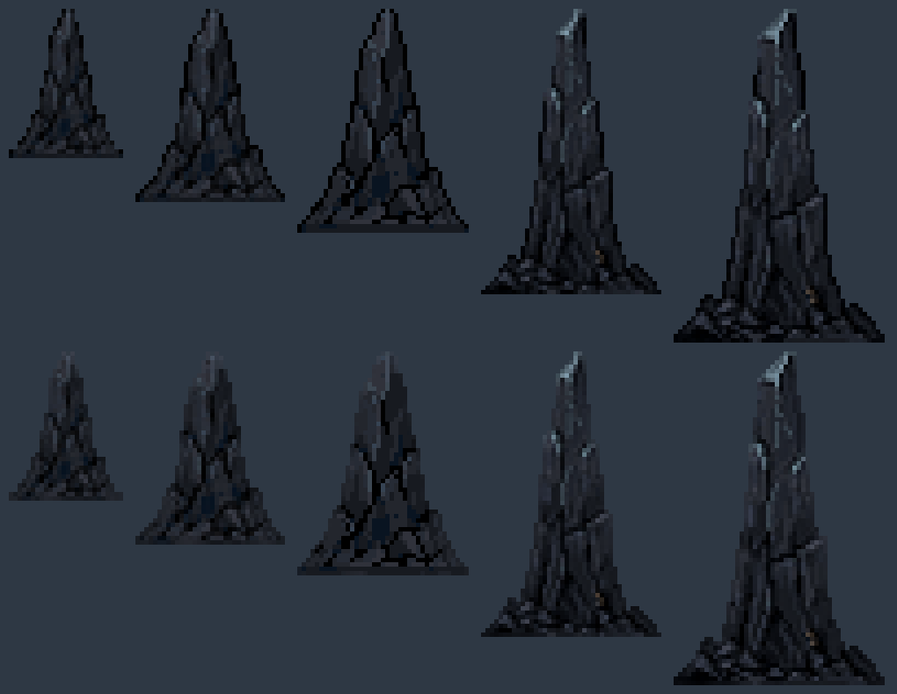

Fase 1 · a caverna · rodada 2: as rochas do salão
21/10/2026 · ← o salão vivo · RECUSADA e retirada do jogo: "as bordas (cima e baixo) já dão dano. E os obstáculos que você adicionou estão flutuando." O salão ficou só com o teto e o chão que mordem. Esta folha fica como registro.
A passagem, em velocidade real






O que está no jogo
- Seis rochas, alternando teto e chão a cada ~1,2 s: um slalom.
- A base de cada uma fica escondida atrás do teto ou do chão do salão, e a ponta aparece. ⚠️ A rocha do teto da sua pintura é fina em vários trechos (chega a 6 px): a estalactite só cabe onde ela é funda, e isso acontece em duas janelas do salão. Onde não cabe, entra uma ponta de chão. Por isso saem 2 estalactites e 4 pontas.
- O vão nunca é menor que 56 px entre uma rocha e a borda de frente. Entre duas rochas há pelo menos 40 px de folga, ~0,5 s para trocar de altura. A F1 é a fase do flap, o berço.
- A arte é a rocha nova da F1, das 5 alturas, sem a borda escura de 1 px. Contra a névoa clara do salão aquela borda lia como contorno desenhado; agora a rocha se funde ao fundo.
- A cadência de tons já fecha sem retoque, medido: a rocha está no tom de obstáculo que você calibrou jogando, legível, entre o fundo do salão (mais claro) e as bordas (mais escuras). A bruma da frente passa por cima dela.
- Nenhuma rocha atrás das rochas da frente: a última sai da tela antes de a rocha da saída cobrir. A sonda confere quadro a quadro, junto com o vão e as bases escondidas.
- A colisão é a de qualquer rocha da F1: encostar machuca.

O que você decide
- A dificuldade: a quantidade de rochas, o vão (56 px) e a folga entre elas (40 px). Tudo está em
OBSTACULOS_CAVERNA_F1. - Jogar a F1 inteira com a caverna.